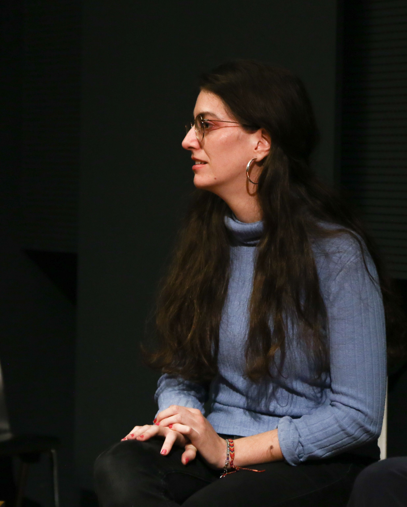

hi!
Welcome to my personal page
Currently I am based in Graz, but I was born in Valencia.
I (try to!) speak 4 languages: Spanish, my mother tongue, Catalan, English and German. I grew up surrounded by the wind band tradicion of my region.
That’s the reason why I started studying the saxophone. Later, I discovered my passion for music theory and contemporary music, which led me to study composition.
Composingis a very important part of my life, and thanks to it I have been able to study in Graz and Vienna. I have met and worked with amazing ensembles and artists from many different fields.
Sciencehas always led me to choose a technical-scientific path since high school. I began studying industrial design engineering, which I later paused to focus on composition. However, I have never completely left this field of interest and have continued to deepen my knowledge in scientific areas connected to music.
I am currently studying for a degree in "Business Software Development" at Campus 02, where I continue to develop my programming skills, among others.
Along the way, I have also explored other activities that complement my broad profile: I have been involved in several production teams, helped edit and orchestrate scores for others, and written a few texts about music. I have also worked for many years in front office and hospitality roles.
